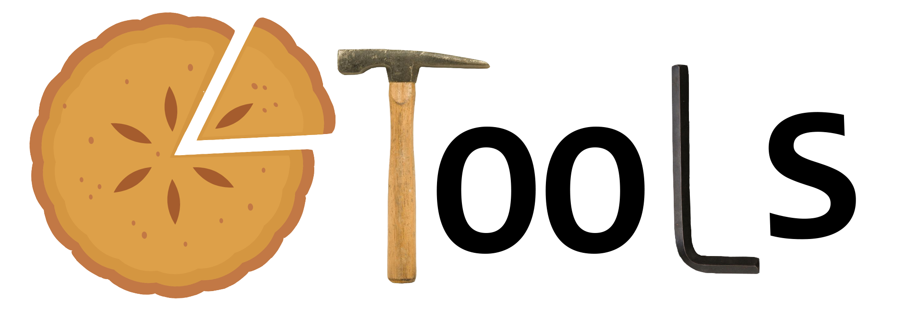

(Page Last updated July 2, 2020)

PIETOOLS is a free MATLAB toolbox for formulating and solving Linear PI Inequalities (LPIs) programs. PIETOOLS can be used to define 3-PI or 4-PI operators, declare 3-PI or 4-PI operators variables (postive semidefinite or indefinite), add operator inequality constraints, and solve LPI optimization problems. The interface is inspired by YALMIP and the program structure is based on that used by SOSTOOLS. By default the LPIs are solved using SeDuMi.
PIE stands for Partial Integral Equation and is an alternative representation for many commonly encountered classes of systems, including Ordinary Differential Equations (ODEs), Partial-Differential Equations (PDEs), Delay Differential Equations (DDEs), and Differential-Difference Equations (DDFs).
The cool thing about PIEs is that, unlike PDEs and DDEs (which have lame boundary conditions, unbounded operators, and continuity constraints), PIEs are defined by the very slick linear algebra of 3/4 PI operators. This feature makes PIEs the representation of choice if you want to do anything computational with your beam equation, network model, reaction-diffusion equations, et c.
Now, you may be wondering if you are going to lose anything by switching your PDE/DDE/DDF to a PIE. No! That would be awful. You may have been hurt in the past by people wrecking your lovely PDE/DDE/DDF using such barbaric tools as approximation via discretization, projection, mollification, regularization or Pade. However, let us assure you that using PIEs is completely safe. The PIE representation of a PDE/DDE/DDF is exact. The solutions are one-to-one, only the tools used for representation have improved.
To install and run PIETOOLS, you need:
The software has been written and is maintained by:
A guide to PIETOOLS 2020a can be found at:
S. Shivakumar and A. Das and M. Peet
PIETOOLS: A Matlab Toolbox for Manipulation and Optimization of Partial Integral Operators
American Control Conference, 2020.
[arXiv:1910.01338]
[.pdf]
[slides]
[CodeOcean]
Introduction to the fundamentals of PIEs, equivalence to PDEs, and an LPI for stability analysis can be found at:
M. M. Peet
A Partial Integral Equation Representation of Coupled
Linear PDEs and Scalable Stability Analysis using LMIs
Not Rejected to Automatica as Regular Paper.
[arXiv:1812.06794] [.pdf] [.ps] [related talk]
[CodeOcean]
M. Peet
Representation of Networks and Systems with Delay: DDEs, DDFs, ODE-PDEs and PIEs
Not Rejected to Automatica as Brief Paper.
[arXiv:1910.03881]
[.pdf]
[slides]
[CodeOcean]
S. Shivakumar and A. Das and S. Weiland and M. Peet
Duality and H_\infty-Optimal Control Of Coupled ODE-PDE Systems
Submitted to the IEEE Conference on Decision and Control, 2020.
[arXiv] [.pdf] [slides] [CodeOcean]
S. Wu and M. Peet and S. Shivakumar and C. Hua
H_\infty-Optimal Observer Design for Linear Systems with Delays in States, Outputs and Disturbances
Submitted to the IEEE Conference on Decision and Control, 2020.
[arXiv] [.pdf] [slides] [CodeOcean]
A. Das and S. Shivakumar and S. Weiland and M. Peet
H-\infty Optimal Estimation for Linear Coupled PDE Systems
IEEE Conference on Decision and Control, 2019.
[arXiv:1809.10308]
[.pdf]
[slides]
[CodeOcean]
For those of you having trouble installing PIETOOLS, converting PDEs to PIEs, or solving LPIs, we have preprared a very incomplete Troublehooting Guide. This Guide addresses most of the problems which have been ecountered by our very helpful group of beta testers.
Our goal is to make use of PIETOOLS as simple as humanly possible. However, our background is not in coding and sometimes we come up short. If you are having a serious technical issue and neither the help commands nor the manual are helping, and believe there is a bug in the program, please report it to: mpeet@asu.edu. If there is a bug, we will add it to the known bug list and do our best to fix it.
Alternatively, if you would like to volunteer for the PIETOOLS development team, we would be happy to include you (no compensation - Sorry). Send an email to mpeet@asu.edu